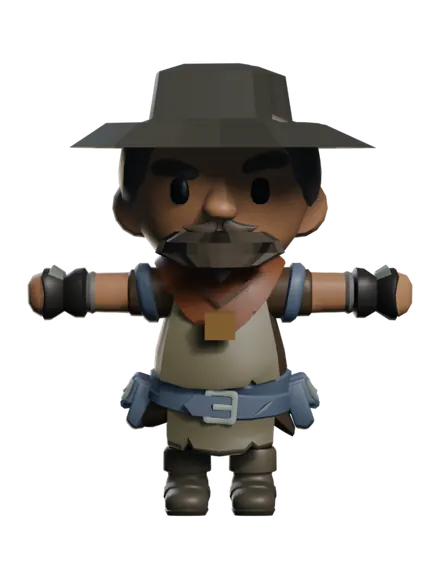

World of ClaudeCraft · The Farshore
Every figure here is the shipping model, not a painting of one. Each is built
onto a KayKit Adventurers rig by a deterministic Blender factory
(scripts/assets/last_bell_crew/): a repainted palette atlas, bespoke geometry
rigidly skinned to single bones, and all 22 of the rig's shipped clips carried through
untouched. One material each, so a crew member still costs one draw call. Spin the
turnaround to check a silhouette; the clips under “In motion” are the real ones
the game plays, sampled frame by frame off these exact GLBs. Static pose plates are
deliberately absent: a prop that reads fine standing still can be plainly wrong the moment
a wrist moves, which is how a batch of reversed shields and an upside-down staff survived
the first review.
The Farshore Crossing
The mainland pier, and the Gullhaven berth
ranger.glb
He sells nothing and saves lives anyway. Nobody crosses for the fishing any more, so every passenger he lands is someone who chose to come, and he has learned to tell them the one thing that matters before they step off: mind the bell, the town listens to it the way you listen to weather.
The sou'wester. A low oilskin hat with the brim turned down and a long tail at the back, which is the single most legible way to say SAILOR at gameplay distance. Under it the fare tin on a cord, hung where a passenger can reach it without being asked, because Q0 lets you pay or decline and he takes you either way.
#4b4a41
Waxed cloth, wet for thirty years. Dark, but still cloth.
#8a8468
Sailcloth bleached pale by the strait.
#6c7c96
His sim entity colour, worn as the coat's lining.
#9c7437
The fare tin, and the only bright thing on him.
Every figure against the player's eye line
Runtime height in yards, the number VisualDef.height normalises each rig to